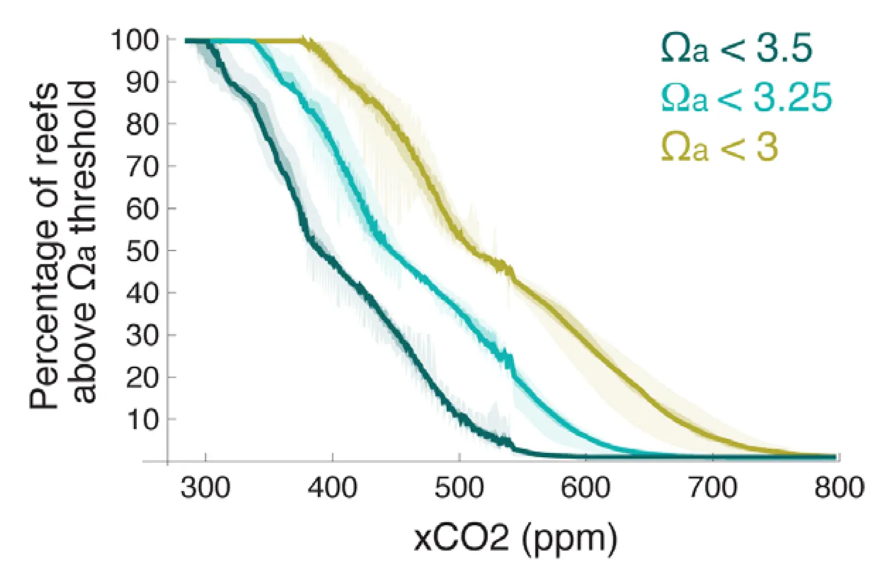

Risks to coral reefs from ocean carbonate chemistry changes in recent earth system model projections
Key finding. In preindustrial times, 99.9 per cent of reefs adjacent to open ocean lay in waters with aragonite saturation above 3.5; under a business-as-usual RCP 8.5 scenario every reef considered will be surrounded by water with saturation below 3 by the end of this century, at which point the reefs' fate is independent of which specific saturation threshold is assumed.

What question did this paper ask?
Coral reefs are threatened by several stressors at once, and it is easy to lose the specific contribution of ocean chemistry among them.
This paper asked what the CMIP5 generation of Earth system models implies for the open ocean carbonate chemistry surrounding reefs, and how the answer depends on where the biological threshold for reef survival actually lies — a quantity that is not precisely known.
What did we find?
Projections come from Earth system models participating in the Coupled Model Intercomparison Project Phase 5, evaluated against three candidate aragonite saturation thresholds rather than a single assumed value.
The preindustrial baseline is nearly uniform. Essentially every open-ocean reef sat in water above the highest threshold considered, which indicates how far outside the historical envelope the projected chemistry lies.
Under RCP 8.5 the threshold question becomes moot. Every reef ends the century below even the most permissive threshold, so uncertainty about coral tolerance stops mattering.
Under scenarios with significant emissions abatement, by contrast, the threshold is decisive — where exactly reefs fail determines how many survive, so the biological uncertainty becomes the dominant one.
Why does it matter?
The structure of the result is unusually clean. A large scientific uncertainty about coral physiology is irrelevant on the high-emissions path and central on the low-emissions path, which means the value of resolving it depends on which path is taken.
It also frames abatement in terms reefs make concrete. The difference between scenarios is not a difference in degree of harm but the difference between a threshold question and no question at all.
Citation, data, and code
Katharine L. Ricke, James C. Orr, Kate Schneider, and Ken Caldeira (2013). Risks to coral reefs from ocean carbonate chemistry changes in recent earth system model projections. Environmental Research Letters 8, 034003.